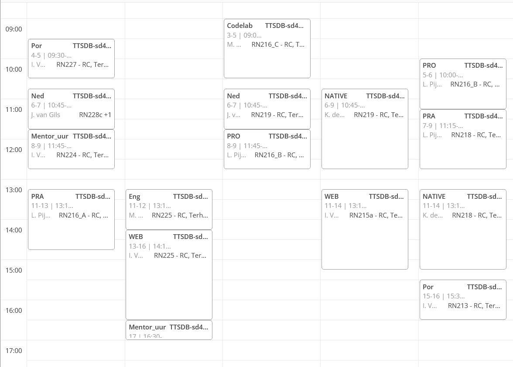

Rooster

Tijdens dit vak maak je kennis met de wereld van webontwikkeling. Je leert hoe je websites ontwerpt en bouwt, en krijgt inzicht in HTML, CSS en PHP.
Hier leer je het maken van native applicaties voor verschillende platforms. Je werkt met programmeertalen zoals Python en C#.
In de praktijkvakken pas je de kennis en vaardigheden toe die je in andere vakken hebt opgedaan.
Dit zijn de taalvakken en richten op het verder ontwikkelen van de taal via een online programma
Ine
docent WEB
Krist
docent NATIVE

Mustafa
docent Engels
Joep
Docent Nederlands

Ik vind het een hele leuke opleiding want je leert programeren in allerlei talen en je leert snel al een leuke website maken dus ik vind het echt een aanrader.
Het huiswerk valt wel mee, als je in de les goed werkt hoef je bijna niks thuis te doen.